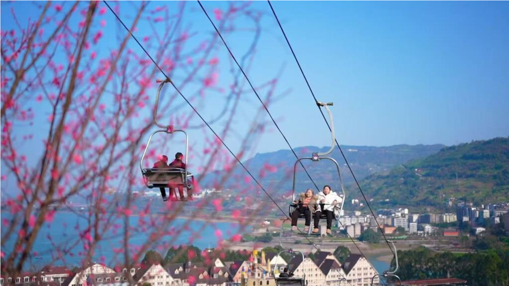
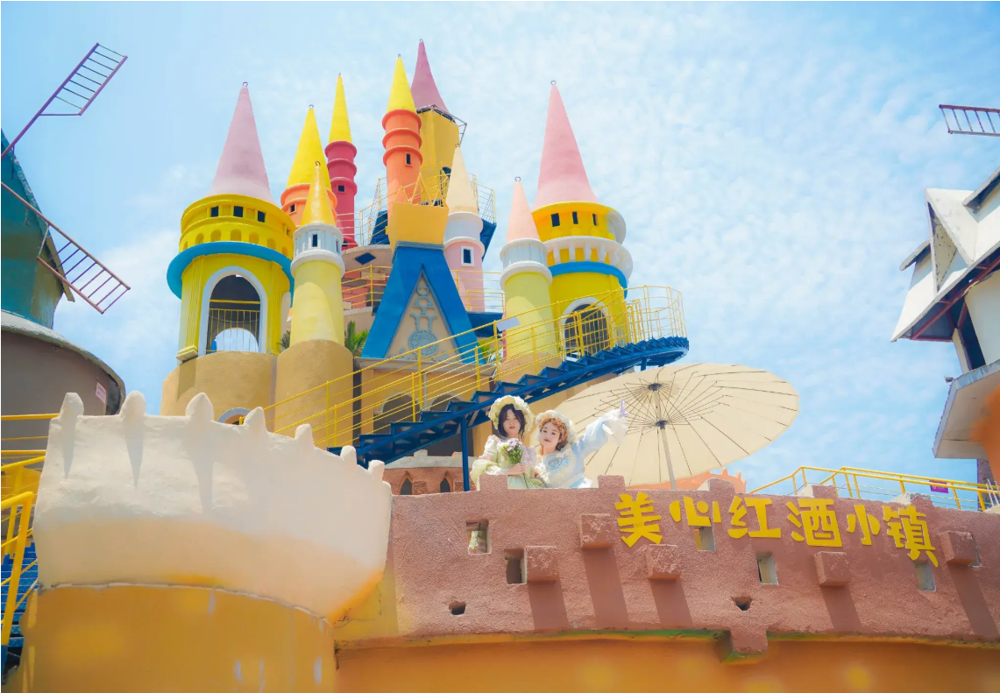

.png)
地址：重庆市涪陵区蔺市镇美心红酒小镇
开放时间：全天开放，游乐项目9:00—21:00
门票：小镇免费入园，游乐项目单独购票
推荐游玩时长：一日游
最佳季节：春秋两季，夜景傍晚最美
交通：自驾导航直达；主城可乘坐大巴至蔺市

游玩路线推荐：网红索道 → 欧式红酒街区 → 彩色童话城堡 → 水上乐园 → 江边吊桥 → 夜景灯光长廊。
横跨梨香溪的高空索道是游览第一站，凌空俯瞰整条河谷风光，视野开阔出片率极高。沿着步道走进欧式红酒街区，复古洋楼、葡萄酒窖充满异域风情，随手就能拍出欧式大片。往前走便是五彩斑斓的童话城堡，马卡龙配色的房屋错落有致，是全天拍照的核心点位。午后可以在水上乐园消暑玩乐，体验戏水项目。临近黄昏漫步江边吊桥，静静等候落日铺满江面，橘色晚霞笼罩河谷。待到天色完全暗下，整条灯光长廊次第点亮，万家灯火倒映在河面，欧式小镇瞬间变身浪漫夜景，氛围感直接拉满。游览路线依次为网红索道、欧式红酒街区、彩色童话城堡、水上乐园、江边吊桥与夜景灯光长廊。高空索道纵览梨香溪河谷景色，欧式街区与童话城堡非常适合白天打卡拍照。待到黄昏走上吊桥观赏江面落日，入夜后灯光尽数亮起，整座小镇灯火连绵，夜景浪漫十足

高空索道凌空横跨梨香溪，索道缓缓滑行，脚下是蜿蜒流淌的河水，两岸田园与欧式建筑群层层铺开，视野辽阔，随手就能拍出纵览河谷的全景大片。园区游乐项目划分清晰，年轻人可以尽情挑战惊险项目：高速过山车跌宕俯冲，带来强烈失重快感；高空摩天轮慢慢升至制高点，将整座小镇风光尽收眼底；网红摇摆桥热闹喧嚣，组队游玩趣味十足。亲子家庭也有充足的游玩选择，慢悠悠乘坐观光小火车穿行街巷，在梦幻的旋转木马享受悠闲时光，还有儿童游乐区，项目温和安全，十分适合小朋友玩耍。美心红酒小镇最大的亮点就是物价亲民，餐饮、游乐收费都十分实在，没有旅游景区常见的高价消费，商业化克制适度，保留了松弛自在的市井气息。无论是情侣短途约会、好友结伴出行，还是一家人自驾休闲，都能轻松游玩一整天，性价比拉满。
✔ 江湖毛血旺：红油醇厚，鸭血滑嫩，地道涪陵江湖菜
✔ 乌江涪陵榨菜：佐餐小菜，脆嫩鲜香，适合旅途便携食用
✔ 蔺市江湖菜、长江鱼、农家土菜，江边农家乐味道正宗
1. 小镇台阶较多，务必穿舒适平底鞋。
2. 傍晚19点灯光全部亮起，是拍照黄金时段。
3. 节假日人流量大，建议工作日错峰出行。
4. 可以顺路沿江散步，欣赏梨香溪江景。